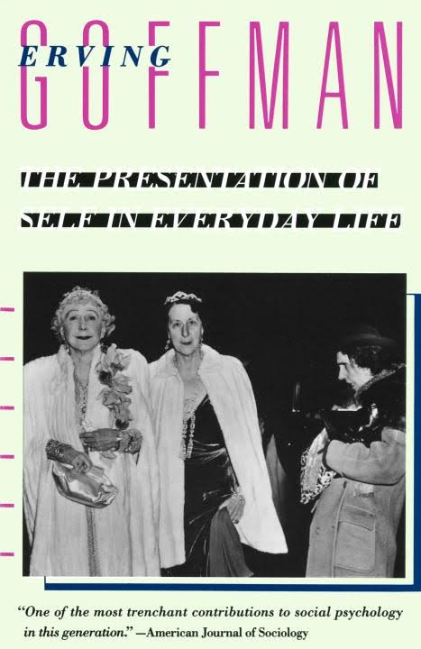
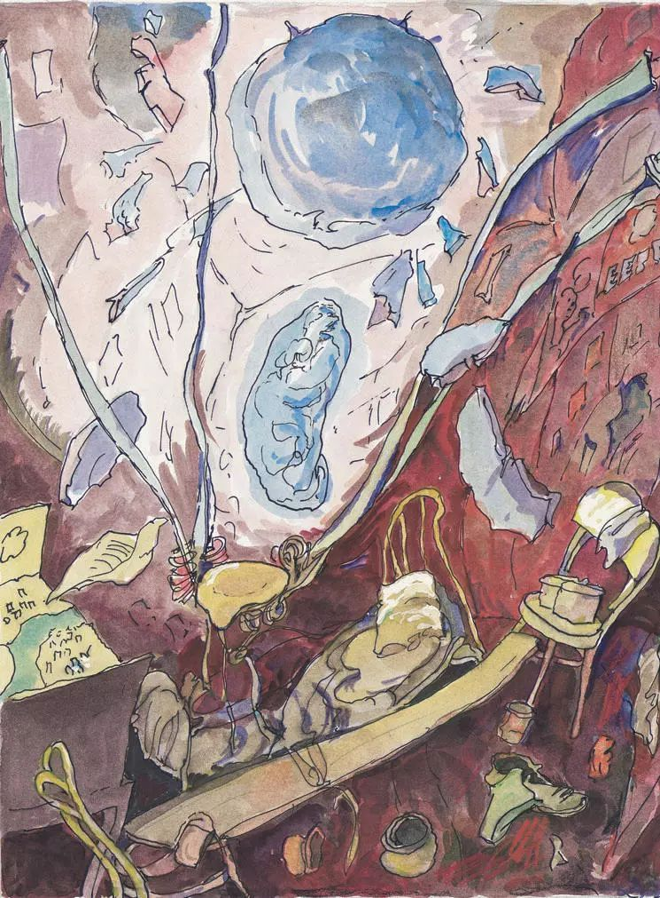

In the discussion last week, my mates gave a lot of suggestions for my first concept, Urban Keylight Pro. Most of the suggestions were for the content of the work, about creative ideas and the possible presentation form. I also think it’s a concept with great potential, so I decided to choose Urban Keylight Pro for further research.
In the discussion, we summarized some keywords of this work: neglected, migrant workers, urban immigrants, marginalized people, urban construction, the hidden corners
Also the keywords people provided for the green screen itself: eliminate, cover up, to only see what is necessary, to decide what to be seen, how not to be seen
Human attention is limited. The information we selectively obtain is generally related to personal experiences or interests. For those things that we do not have relevant experience or proper understanding, it is often difficult for us to empathize, so that such things may be selectively ignored by us. Besides, we tend to ignore things that we think are unimportant. Just like while reading a novel, we may pay more attention to the main narrative story line, details that are not so relevant often got ignored.
I sometimes wonder that what if the things I see is what the society wants me to see? I have studied a topic called "Social Performance" in my undergraduate course. This concept comes from a book called The Presentation of Self in Everyday Life written by Erving Goffman, a Canadian sociologist. Goffman uses the imagery of theatre in order to portray the importance of human social interaction, presented an idea that society is actually a stage, every individual in the society is a performer of the show. The social stage only show the works that have already been arranged, everything behind the stage is blurred.  The green screen of society may be derived from our role in the social performance. What we see is actually the script of our part. We are often indifferent to episodes that are not related to ourselves. And in this fast-paced society, people tend to pay more attention to the grand finale, the process is often ignored.
(The construction site opposite to my dormitory has been closed for a few days, I haven't had the opportunity to do one-on-one interview. This interview part is quite important for my work, gonna do it when conditions permit.)
1. The reason they come to metropolis
Since 2000, with the growth of the private economy, more and more migrant workers have entered the "informal economy" in the cities, becoming temporary workers and contract workers in multiple industries in the cities, instead of only focusing on the construction industry and suburban agriculture. Even the manufacturing industry relies on a large number of rural immigrants as the main labor force. Although they got "different pay for equal work" with urban residents (urban residents are formal workers with insurances) For migrant workers, they enter the city because of higher income and the opportunities. At the same time, when they leave the countryside and agriculture and enter the city, it is also good for the agricultural sector. Only when a large number of farmers are transferred out, the remaining farmers can have more per capita resources, especially land. The second reason why workers go to cities is for the public facilities. A large number of public services (including medical care, education, etc.) are provided on the basis of local finances, which leads to large disparity in public services between urban and rural areas. After arriving in big cities, migrant workers can partly share those service. Although part of the public services in China is now linked to household registration, such as education and medical care, but there are also many public services that are not linked to household registration, such as subways, urban parks, and cultural facilities. In big cities, the sharing of public services can also improve the quality of life.
2.The marginalized groups
These workers come from different provinces and most of them are still in the process of transitioning from rural to urban. Many of them have dual identities as both workers and farmers. They live by working in cities, but their institutional identity are not urban citizens, so they cannot stay in the cities where they work for long period of time. At the same time, restricted by urban & rural differences and their own skills, it is difficult for them to obtain stable and high-income jobs in the city, so it is difficult for them to truly integrate into the urban mainstream society, but they are not willing to return to the countryside either. Therefore, they are in a certain state of marginalization whether in the countryside or in the city.
3.The problem of the new generation of migrant workers
Most of the new generation of migrant workers are in their early 20s. Most of them are unmarried, but they will face problems such as marriage, childbirth and education of their children. They will also inevitably take on many foreseeable and unforeseen challenges and variabilities. most of them have just walked out of school In 3-5 years, although full of passions and ideals, the opportunities the city provides them are not diversified.
As for the final presentation form, I have not decided yet, but I hope it tends to be a narrative installation.
I really admire the works of Ilya and Emilia Kabakov, they are well-known for their "TOTAL INSTALLATION". I think their works are great references for narrative installation creation.
Ilya and Emilia Kabakov, The Man Who Flew Into Space From His Apartment, 1985

Sketch of The Man Who Flew Into Space From His Apartment, 1984
This work is one of my favorite installation work, it was created in 1984, the viewer enters the installation through a single door and is invited to visit the separate rooms, only one of which cannot be entered and must be viewed through cracks in a door that has been shoddily boarded up. The Man Who Flew into Space from His Apartment tells the story of one of the residents who built a catapult-like contraption to shoot himself through the roof into outer space, where he would travel on powerful streams of energy. A text describes the story as narrated by three of the other residents, one of whom happened to know the cosmonaut better than the others yet admits, “I didn’t know him well.” The room still contains the contraption, a gaping hole in the ceiling, and scientific drawings and diagrams tacked to a wall that is covered with wallpaper composed of old Soviet propaganda posters. A diorama of the town shows the man’s expected projectile path into outer space. The text explains that shortly after the man went into orbit authorities arrived and boarded up the room.